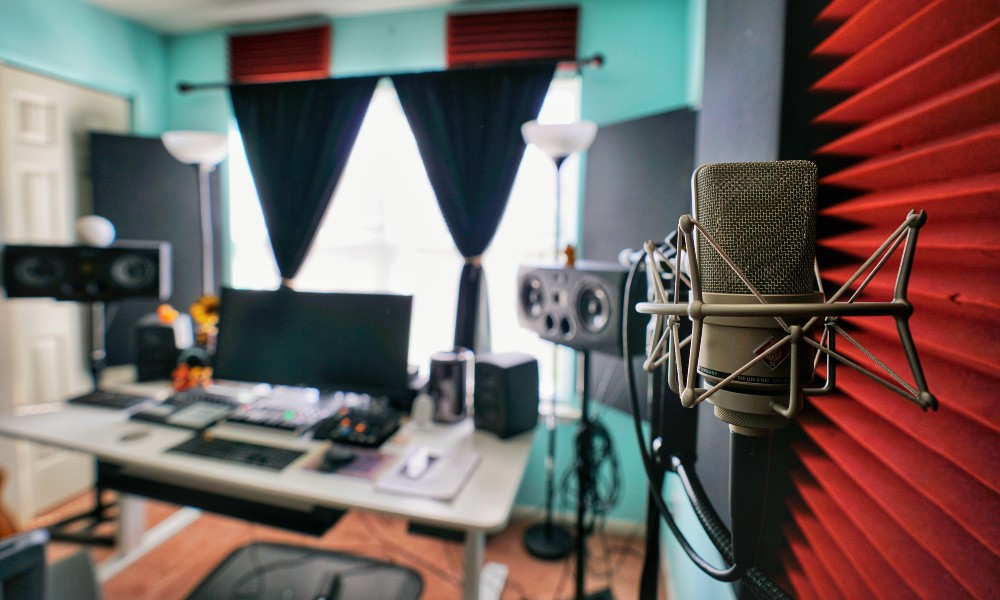

El hogar adaptable y adecuado para encontrarlos mejores beat para subir al siguiente
nivel👌
nombre/apellido
edad
listo
Jhon
18
x
.
..
.
.
.
.......
Producto
Cantidad
Precio
monitores
3
$5.445.232
Computador
2
$2.500.232
Total
5
$7.945.464
Louder Academy | Producción Musical y Grabación Profesional en Quibdó, Chocó
Bienvenido a Louder Academy, el epicentro de la creatividad sonora en Quibdó, Chocó. Somos un estudio y academia
de producción musical comprometidos con el talento local y nacional. Ofrecemos sesiones de grabación de alta
calidad, mezcla, masterización y formación profesional para artistas emergentes y productores en crecimiento.
En Louder Academy, combinamos equipos de última generación con un ambiente creativo y personalizado, ideal para
desarrollar tu sonido único. Ya seas cantante, rapero, productor o simplemente un apasionado por la música, aquí
encontrarás el espacio perfecto para llevar tus ideas al siguiente nivel.
🚀 Lo que ofrecemos:
🎙️ Grabación profesional
🎚️ Producción musical personalizada
🎛️ Mezcla y masterización
🎓 Cursos y talleres de producción musical
📍 Ubicados en el corazón de Quibdó, con puertas abiertas para todo el Chocó
Haz que tu voz se escuche más fuerte. Súbele el volumen a tu carrera con Louder Academy. profecional en
la producion musical
Enfoque
Louder Academy centra su enfoque en potenciar el talento individual de cada estudiante, brindándoles
herramientas profesionales y formación práctica para desenvolverse en la industria musical actual. La
academia promueve un ambiente creativo y colaborativo, donde los alumnos aprenden desde producción,
composición y mezcla, hasta interpretación y marketing musical. Con mentores activos en la escena musical,
Louder busca que cada artista desarrolle su estilo propio y logre una identidad sonora auténtica.
Puntos del Enfoque en la música de Louder Academy:
Desarrollo del talento
individual y autenticidad artística.
Formación práctica en producción, composición y
mezcla.
Clases impartidas por profesionales activos en la industria.
Estímulo
de la creatividad y la colaboración entre alumnos.
Acompañamiento en la construcción
de una identidad musical única.
Acceso a herramientas tecnológicas y
recursos profesionales.
mision de Louder Academy
La misión de Louder Academy es transformar la pasión por la música en una carrera real y sostenible. Su
propósito es formar artistas íntegros, preparados para afrontar los retos del entorno musical moderno,
combinando formación técnica, artística y empresarial. Louder busca inspirar y empoderar a nuevas
generaciones de músicos para que se conviertan en líderes creativos con impacto en la cultura, utilizando la
música como una herramienta de expresión, conexión y cambio.
Puntos de la Misión en la música de Louder Academy:
Convertir la pasión musical en una
carrera profesional.
Formar artistas completos en lo técnico, artístico y
empresarial.
Preparar a los alumnos para los retos de la industria moderna.
Promover el uso de la música como medio de expresión y transformación.
Inspirar liderazgo creativo y compromiso cultural.
Fomentar una comunidad
que apoye el crecimiento mutuo.
🔑 Claves para Distribuir tu Música con Louder Academy
Producción de Calidad Profesional
Antes de distribuir, nos aseguramos de que tu canción esté bien grabada, mezclada y masterizada para competir en
el mercado global.
Registro de Derechos
Te ayudamos a registrar tu obra ante entidades como Sayco o registrarla digitalmente para proteger tus derechos
como artista.
Distribución Digital Global
Usamos plataformas confiables (como DistroKid, TuneCore o ONErpm) para subir tu música a Spotify, Apple Music,
YouTube, Deezer y más de 150 tiendas digitales.
Diseño de Portada y Metadata
Creamos tu arte visual y completamos todos los detalles necesarios (nombre del artista, género, ISRC, etc.) para
un lanzamiento profesional.
Plan de Lanzamiento
Te guiamos para elegir la mejor fecha, estrategia de promoción y redes sociales para maximizar el impacto del
estreno.
Promoción y Marketing Musical
Ofrecemos campañas de redes, prensa local y playlists para que tu música llegue a más oyentes.
Monetización y Reportes
Hacemos seguimiento de tus ingresos por streams y descargas, y te asesoramos sobre cómo generar más ingresos con
tu música.

pasos que llevaremos
Escucha Creativa y Análisis Inicial
Evaluamos tu canción, el estilo, la energía y los elementos principales para entender la visión artística
antes de comenzar a mezclar.
Organización de la Sesión
Limpiamos, renombramos y organizamos todas las pistas (voces, instrumentos, efectos) para un flujo de
trabajo eficiente y preciso.
Corrección Técnica
Aplicamos edición de timing, afinación vocal (si es necesario), y limpieza de ruidos o clicks no deseados
para dejar todo limpio y profesional.
Balance de Volumen y Paneo
Ajustamos los niveles y la ubicación de cada sonido en el espacio estéreo para que todo suene equilibrado y
natural.
Ecualización y Compresión Avanzada
Realzamos lo mejor de cada pista y controlamos la dinámica para que cada elemento brille sin opacar a los
demás.
Diseño Sonoro y Efectos
Añadimos reverb, delay, modulación y efectos creativos que le dan profundidad, emoción y movimiento a la
mezcla.
Automatización Detallada
Creamos cambios sutiles o intensos en volumen, efectos y panorámica a lo largo del track para mantener al
oyente enganchado.
Revisión A/B y Ajustes Finales
Comparamos la mezcla con referencias profesionales, hacemos pruebas en diferentes dispositivos y realizamos
ajustes hasta lograr el mejor resultado.
Entrega de Mezcla Profesional
Exportamos la mezcla final en alta calidad, con versiones opcionales (instrumental, acapella, clean, etc.)
listas para masterizar o distribuir.
La ecualización en FL Studio se utiliza para moldear el sonido de tus pistas y lograr una mezcla equilibrada y
profesional. Puedes utilizar ecualizadores paramétricos, gráficos y herramientas de edición de audio para aumentar o
disminuir frecuencias específicas, mejorar la claridad, eliminar frecuencias molestas y controlar la dinámica de tus
sonidos
DAWs más usados para producir música
FL Studio (Image-Line)
Ableton Live
Logic Pro X (Apple)
Pro Tools (Avid)
Cubase (Steinberg)
Studio One (PreSonus)
Reaper
¿Cuál elegir?
nombre/apellido
edad
listo
Jhon
palacios
18
x
.
..
.
.
.
.......
Si haces trap, reguetón o hip hop, FL Studio o Ableton son ideales.
Para grabación vocal profesional, Pro Tools o Logic Pro son los más usados.
Si quieres componer o trabajar con MIDI avanzado, Cubase o Studio One funcionan muy bien.
la compresión se usa para reducir el rango dinámico de un sonido, haciendo que las partes más silenciosas sean
más fuertes y las partes más ruidosas sean más suaves
Tu música merece ser escuchada con fuerza, calidad y respeto.
En Louder Academy, entendemos lo importante que es tu arte. No solo ofrecemos un estudio, ofrecemos un espacio
seguro, profesional y creativo donde tu música es prioridad. Aquí no eres un cliente más: eres un artista con
una historia que merece ser contada con el mejor sonido posible.
🎙️ ¿Eres cantante, productor o apenas estás empezando? No importa tu nivel. Nos adaptamos a ti, te guiamos paso
a paso y hacemos que tu visión musical se vuelva realidad.
💼 Experiencia real, trato humano.
Con equipos de alta calidad, ingenieros apasionados y un ambiente que se siente como casa, te damos todo lo que
necesitas para grabar, producir y lanzar tu música con confianza.
📞 ¿Listo para sonar más fuerte?
Contáctanos hoy 0000000000 Estamos aquí para escucharte, apoyarte y ayudarte a crecer. En Louder Academy,
tu voz suena más fuerte, y tu talento va más lejos.